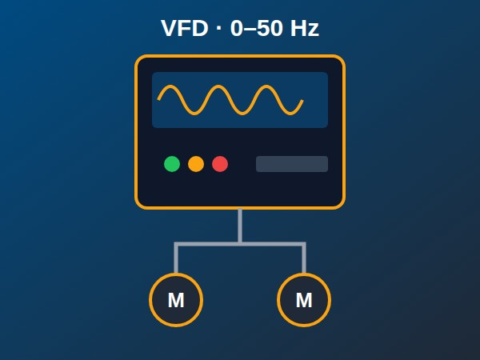

🎛️ Programa Completo de Formação em Variadores de Frequência (VFD)

🎯 Finalidade do Programa
Formar progressivamente um técnico capaz de compreender a eletricidade industrial e os motores trifásicos, ler esquemas, medir com segurança, selecionar, parametrizar, comissionar e integrar variadores de frequência em rede com PLC, diagnosticar falhas avançadas e aplicar VFD em elevadores e na indústria de petróleo e gás, incluindo eficiência energética, harmónicas e áreas classificadas.
📐 Estrutura do Curso
- Nível 1 (Iniciante): Módulos 1-4 | Aulas 1–38 (Eletricidade, diagramas, motores e instrumentação)
- Nível 2 (Intermédio): Módulos 5-9 | Aulas 39–90 (Fundamentos do VFD, parametrização, E/S, redes industriais e marcas)
- Nível 3 (Avançado/Especialista): Módulos 10-15 | Aulas 91–140 (Controlo vetorial, harmónicas, eficiência, troubleshooting, elevadores e petróleo e gás)
- Projeto Final: Certificação com dossiê técnico, demonstração prática e defesa
👥 Metodologia
Cada aula contém objetivo, conteúdo técnico, tabelas de apoio e um teste prático. Cada módulo termina com uma avaliação prática e cada nível com uma avaliação final. A nota mínima para avançar é de 70 %.
⚠️ Nota de Segurança
Este curso tem fins formativos. Trabalhos em instalações elétricas, elevadores, guindastes e áreas classificadas só devem ser realizados por pessoal qualificado, com bloqueio e etiquetagem (LOTO), cumprindo os manuais dos fabricantes e a regulamentação aplicável. Os códigos de parâmetros indicados devem ser sempre confirmados no manual da versão do equipamento.